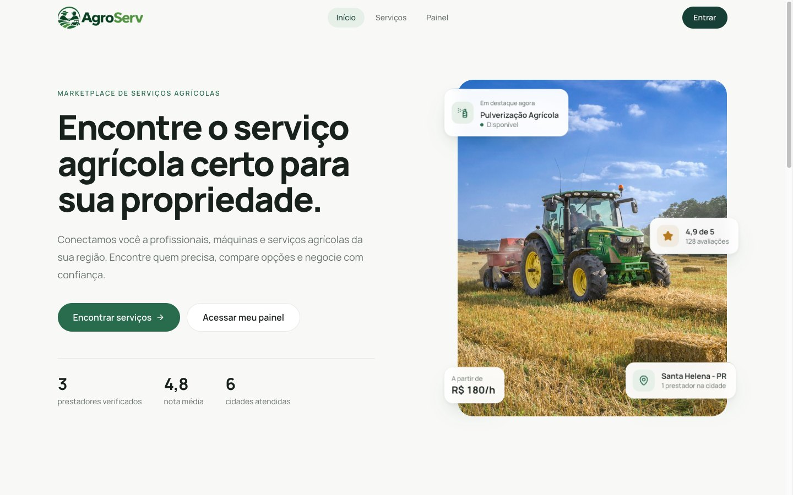
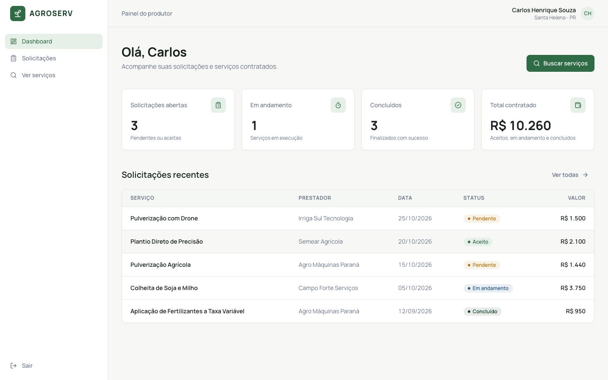
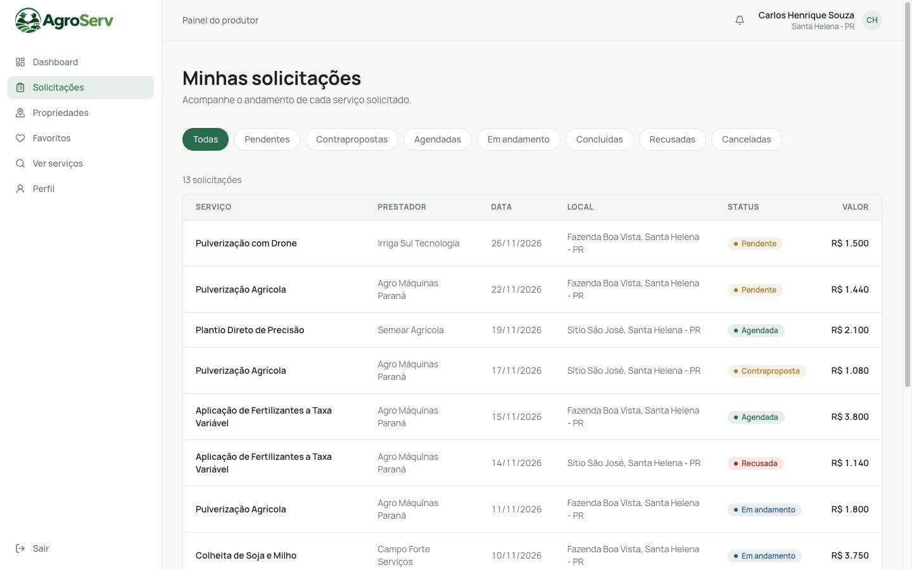
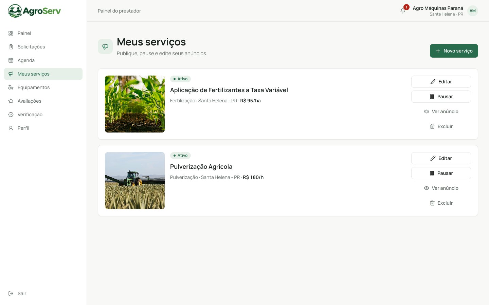
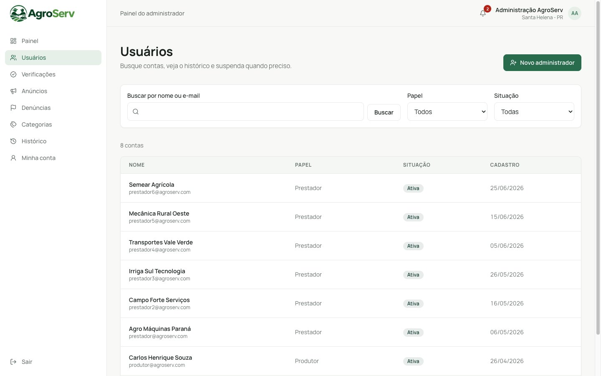
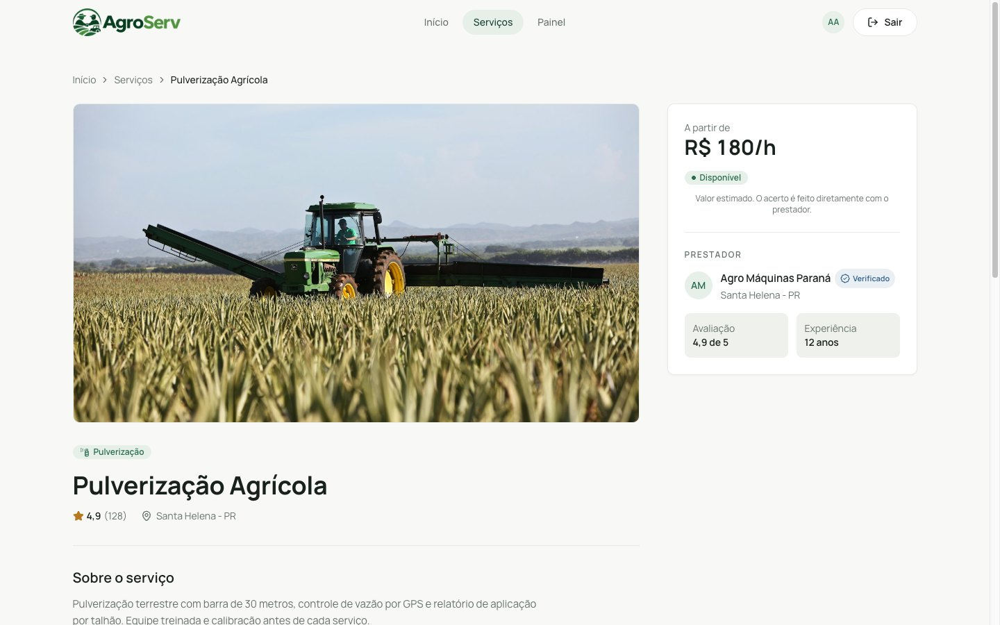
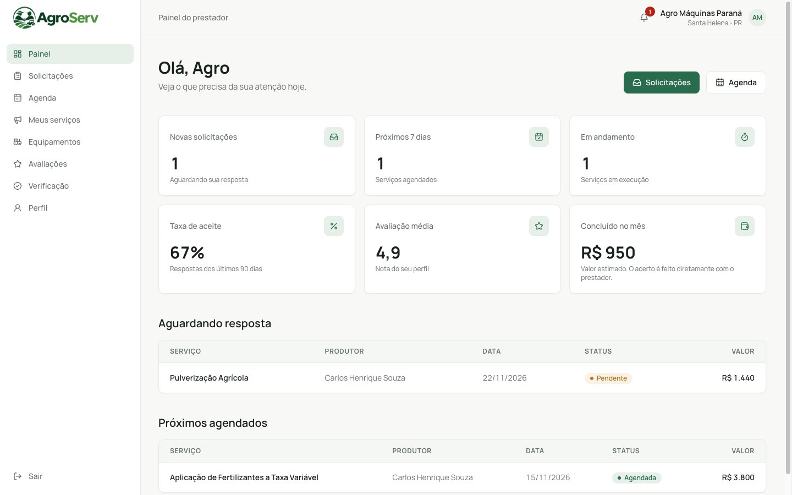
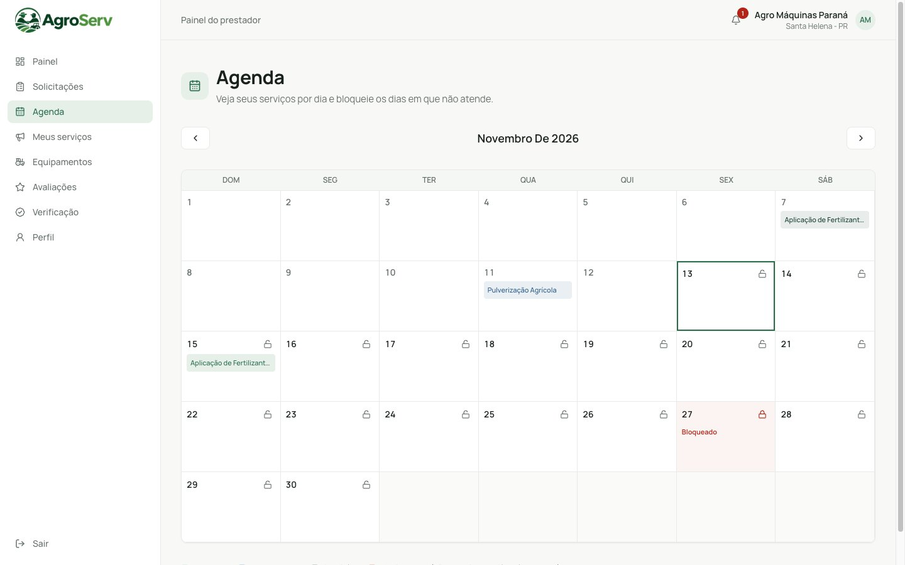
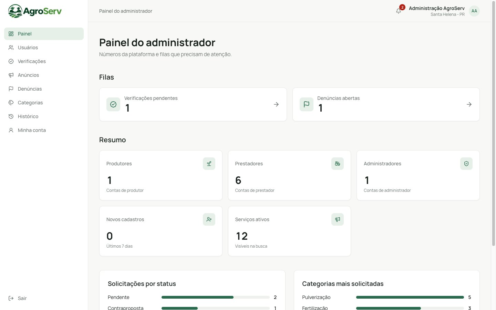

Da experiência visual à aplicação integrada.
UTFPR · Campus Santa Helena · CC6PDSW

A primeira etapa estabeleceu a experiência.

Capturas da primeira entrega, antes de qualquer mudança desta etapa.


O protótipo evoluiu para uma aplicação mais completa.
Uma experiência ampliada para diferentes operações.
Produtor ÁREA AMPLIADA

- Solicitações
- Detalhe com negociação
- Propriedades
- Favoritos
- Notificações
- Perfil
Prestador ÁREA NOVA

- Painel
- Meus serviços
- Criar e editar anúncio
- Pedidos recebidos
- Agenda
- Equipamentos
- Avaliações
- Verificação
- Perfil
Administrador ÁREA NOVA

- Painel com filas
- Usuários
- Verificações
- Anúncios
- Denúncias
- Categorias
- Histórico
- Minha conta
Também novas: cadastro, recuperação de senha, perfil público do prestador, termos e privacidade.
Da descoberta à negociação.
Uma sequência real de uso, da busca até a contraproposta aceita.





Uma operação organizada para quem oferece serviços.



Controle e gestão da plataforma.

/solicitacoes · /favoritosAPI: @Roles('producer')/prestador/*API: @Roles('provider')/admin/*API: @Roles('admin') · filas, contas, anúncios, denúnciasDuas barreiras. Na interface, a ProtectedRoute manda cada papel para a sua área. Na API, o RolesGuard global responde 403 para o papel errado, e o token de uma conta suspensa deixa de valer.
37 telas. 3 papéis. Uma única plataforma.
NestJS 12 · TypeORM 1.1 · SQLite com better-sqlite3
Por trás da experiência, uma arquitetura própria.
apiClient → httpAdapterdata/agroserv.sqliteA lógica de negócio, a autenticação e os dados saíram do navegador. A interface agora só conversa com a API por HTTP.
Cada parte com a biblioteca certa.
Módulos, injeção de dependência e controllers sobre Express
app.module.tsLê o .env e entrega valores tipados
config.tsEntidades, repositórios, QueryBuilder e migrations
database.module.tsDriver do SQLite: o banco inteiro é um arquivo
data/agroserv.sqliteToken de sessão e hash das senhas
auth.service.tsRegras declaradas nos DTOs e conversão de tipos
*/dto/*.dto.tsCabeçalhos HTTP seguros e limite de 300 requisições por minuto
main.ts · app.module.tsRecebe upload multipart de até 5 MB
uploads.controller.tsEnvia o link de redefinição de senha por SMTP
mail.service.tsTestes unitários e chamadas HTTP reais na API
backend/testToda requisição passa pelo mesmo trilho.
Antes de chegar ao controller, cada requisição passa por segurança, login, permissão e validação. Na volta, a resposta ganha um formato padrão.
async function bootstrap(): Promise<void> {
const app = await NestFactory.create(AppModule);
const config = app.get(ConfigService);
const origin = config.getOrThrow<string>('corsOrigin');
app.use(helmet({ crossOriginResourcePolicy: { policy: 'cross-origin' } }));
app.enableCors({ origin: origin === '*' ? true : origin.split(',') });
await app.listen(config.getOrThrow<number>('port'));
}
await bootstrap();
providers: [
{ provide: APP_GUARD, useClass: ThrottlerGuard },
{ provide: APP_GUARD, useClass: AuthGuard },
{ provide: APP_GUARD, useClass: RolesGuard },
{ provide: APP_FILTER, useClass: HttpExceptionFilter },
{ provide: APP_INTERCEPTOR, useClass: ResponseInterceptor },
{ provide: APP_PIPE, useClass: TrimPipe },
{ provide: APP_PIPE, useFactory: createValidationPipe },
],
LoggerMiddleware em todas as rotas@nestjs/throttler: até 300 requisições por minuto@nestjs/jwt lê o Bearer e carrega o usuário ativo@Roles(). Se não bate, 403class-validator. Se falha, 422rxjs map embrulha em { success, data }{ success: false, error }Uma estrutura organizada em responsabilidades.
Exemplo real: o prestador aceita um pedido em POST /provider/requests/:id/accept
provider-requests.controller.tsRecebe a rota, exige @Roles('provider') e repassa o usuário logado.
provider-requests.service.tsO caso de uso: carrega o pedido do próprio prestador e pede a transição.
request-lifecycle.tsTabela única de transições e regras de data, sem banco, testada isolada.
requests.repository.tsEnvolve o Repository<ServiceRequest> do TypeORM em consultas nomeadas.
service-request.entity.tsClasse mapeada para a tabela service_requests, com relações.
data/agroserv.sqliteUm arquivo, com o schema criado pela migration InitialSchema.
17 módulos em app.module.ts
Cada recurso fica no seu módulo, com controller, service, repository e entidades próprios. Use → para seguir a requisição camada por camada.
O controller recebe a rota. O service decide.
O controller só recebe a rota HTTP e repassa os dados. A regra de negócio fica no service, que o Nest injeta no controller automaticamente.
@Roles('producer')
@Controller('me/favorites')
export class FavoritesController {
constructor(private readonly favorites: FavoritesService) {}
@Get()
list(@CurrentUser() user: User): Promise<ServiceView[]> {
return this.favorites.list(user.id);
}
@Post()
@HttpCode(200)
add(@CurrentUser() user: User, @Body() dto: AddFavoriteDto): Promise<ServiceView> {
return this.favorites.add(user.id, dto.serviceId);
}
@Delete(':serviceId')
@HttpCode(204)
remove(@CurrentUser() user: User, @Param('serviceId') serviceId: string): Promise<void> {
return this.favorites.remove(user.id, serviceId);
}
}
@Injectable()
export class FavoritesService {
constructor(
private readonly favorites: FavoritesRepository,
private readonly services: ServicesRepository,
private readonly catalog: CatalogService,
private readonly clock: ClockService,
) {}
async add(producerId: string, serviceId: string): Promise<ServiceView> {
const service = await this.catalog.findVisible(serviceId);
await this.favorites.add(producerId, service.id, this.clock.nowIso());
return toServiceView(service);
}
async remove(producerId: string, serviceId: string): Promise<void> {
await this.favorites.remove(producerId, serviceId);
}
}
→Use a seta para percorrer o código. Os trechos são do repositório, sem edição.
1@Roles('producer') vale para a classe inteira. O RolesGuard global barra os outros papéis com 403.
2O Nest injeta as dependências pelo construtor. Nenhum repositório é criado com new.
3@Body() entrega o DTO já validado. O service confere se o anúncio está visível antes de salvar.
4@HttpCode(204): remover não devolve corpo, e o interceptor deixa a resposta passar sem envelope.
Os dados passaram a ter estrutura e persistência.
- id uuid
- name
- role 3 papéis
- status
- userId PK · FK
- verificationStatus
- serviceRadiusKm
- providerId FK
- categoryId FK
- title
- price
- priceUnit
- slug
- name
- active
- serviceId FK
- producerId FK
- providerId FK
- propertyId FK
- status
- scheduledDate
- requestId FK
- type
- actorRole
- requestId FK
- rating
- comment
- producerId FK
- serviceId FK
service_equipmentInitialSchemaO TypeORM monta a consulta. O SQLite responde.
Cada filtro escolhido na tela vira uma condição na consulta, montada pelo QueryBuilder do TypeORM e executada no SQLite.
search(filters: ServiceSearch, page: PageRequest): Promise<[Service[], number]> {
const query = this.visible();
this.matchTerms(query, 'service.searchText', filters.terms);
this.matchTerms(query, 'service.locationText', filters.locationTerms);
if (filters.categorySlug) query.andWhere('category.slug = :slug AND category.active = 1', { slug: filters.categorySlug });
if (filters.priceUnit) {
query.andWhere('service.priceUnit = :unit', { unit: filters.priceUnit });
if (filters.minPrice !== undefined) query.andWhere('service.price >= :minPrice', { minPrice: filters.minPrice });
if (filters.maxPrice !== undefined) query.andWhere('service.price <= :maxPrice', { maxPrice: filters.maxPrice });
}
if (filters.minRating !== undefined) query.andWhere('service.rating >= :minRating', { minRating: filters.minRating });
if (filters.verifiedOnly) query.andWhere("profile.verificationStatus = 'approved'");
if (filters.availableOn) {
const blocked = 'SELECT 1 FROM blocked_days blocked WHERE blocked.providerId = service.providerId AND blocked.date = :day';
query.andWhere('service.available = 1').andWhere(`NOT EXISTS (${blocked})`, { day: filters.availableOn });
}
if (filters.sort === 'price_asc') query.orderBy('service.price', 'ASC');
else if (filters.sort === 'price_desc') query.orderBy('service.price', 'DESC');
else if (filters.sort === 'rating') query.orderBy('service.rating', 'DESC').addOrderBy('service.reviewCount', 'DESC');
else query.orderBy('service.createdAt', 'ASC');
return query.addOrderBy('service.id', 'ASC').skip(page.skip).take(page.pageSize).getManyAndCount();
}
visible() já filtra anúncio ativo de prestador ativo. Os termos buscam no texto sem acento.
:unit e :minPrice vão separados do SQL. O texto do usuário nunca é concatenado.
NOT EXISTS em blocked_days tira quem bloqueou o dia escolhido.
skip, take e getManyAndCount trazem a página e o total numa só ida.
Schema versionado, dados demo reproduzíveis.
A migration cria as tabelas de forma versionada. O seed apaga, recria e preenche o banco com dados de demonstração em uma única transação.
TypeOrmModule.forRootAsync({
inject: [ConfigService],
useFactory: (config: ConfigService) => {
const database = config.getOrThrow<string>('databasePath');
if (database !== ':memory:') mkdirSync(dirname(database), { recursive: true });
return {
type: 'better-sqlite3' as const,
database,
entities: ENTITIES,
migrations: MIGRATIONS,
migrationsRun: true,
synchronize: config.getOrThrow<boolean>('synchronize'),
};
},
}),
Compara as entidades com o banco e gera o SQL.
Aplica as migrations pendentes.
Apaga, migra e grava os dados demo.
export class InitialSchema1794466778622 implements MigrationInterface {
name = 'InitialSchema1794466778622';
public async up(queryRunner: QueryRunner): Promise<void> {
const schemaCreatedBySynchronize = await queryRunner.hasTable('users');
if (schemaCreatedBySynchronize) return;
await queryRunner.query(
`CREATE TABLE "provider_profiles" ("userId" varchar PRIMARY KEY NOT NULL, …)`,
);
async reset(): Promise<void> {
await this.dataSource.dropDatabase();
await this.dataSource.runMigrations();
await this.seed();
}
async seed(): Promise<void> {
await this.dataSource.transaction(async (manager) => {
await this.seedUsers(manager);
await this.seedCatalog(manager);
await this.seedRequests(manager);
await this.seedExtras(manager);
});
}
Login com bcrypt, sessão com JWT.
No login, o service limita as tentativas, compara a senha com o hash do bcrypt e devolve um token JWT, que o front envia em toda requisição.
const MAX_FAILED_LOGINS = 5;
const FAILED_LOGIN_WINDOW_MS = 15 * 60 * 1000;
async login(dto: LoginDto): Promise<SessionView> {
const { email: rawEmail, password } = dto;
const email = rawEmail.toLowerCase();
const since = this.clock.isoFromNow(-FAILED_LOGIN_WINDOW_MS);
if ((await this.attempts.countSince(email, since)) >= MAX_FAILED_LOGINS) {
throw new AppException(429, 'too_many_attempts', 'Muitas tentativas. Aguarde alguns minutos e tente de novo.');
}
const user = await this.users.findByEmail(email);
const hash = user ? await this.users.findPasswordHash(user.id) : null;
if (!user || !hash || !(await bcrypt.compare(password, hash))) {
await this.attempts.register(email, this.clock.nowIso());
throw unauthorized('E-mail ou senha inválidos.', 'invalid_credentials');
}
if (user.status === 'suspended') {
throw forbidden('Sua conta está suspensa. Entre em contato com o suporte.', 'account_suspended');
}
await this.attempts.clear(email);
return this.openSession(user);
}
private async openSession(user: User): Promise<SessionView> {
const payload: JwtPayload = { sub: user.id, email: user.email, role: user.role };
const token = await this.jwt.signAsync(payload);
return { token, user: toUserView(user) };
}
5 erros em 15 minutos bloqueiam o e-mail com 429. As falhas ficam na tabela login_attempts.
Só o hash fica no banco, com 10 rodadas. A comparação é feita pelo bcrypt.
bcrypt 6O payload leva id, e-mail e papel. Validade padrão de 7 dias em JWT_EXPIRES_IN.
Não entra, e o AuthGuard deixa de aceitar o token dela nas próximas requisições.
Quem pode o quê, declarado no código.
Os decorators marcam cada controller com os papéis permitidos. O RolesGuard lê essa marcação e responde 403 para quem não tem acesso.
export const Public = (): MethodDecorator & ClassDecorator => SetMetadata(PUBLIC_KEY, true);
export const Roles = (...roles: Role[]): MethodDecorator & ClassDecorator =>
SetMetadata(ROLES_KEY, roles);
export const CurrentUser = createParamDecorator(
(_data: unknown, context: ExecutionContext): User | undefined => {
return context.switchToHttp().getRequest<AuthenticatedRequest>().user;
},
);
canActivate(context: ExecutionContext): boolean {
const targets = [context.getHandler(), context.getClass()];
const roles = this.reflector.getAllAndOverride<Role[]>(ROLES_KEY, targets);
if (!roles?.length) return true;
const { user } = context.switchToHttp().getRequest<AuthenticatedRequest>();
if (!user || !roles.includes(user.role)) throw forbidden();
return true;
}
@Public()
@Controller('services')
export class ServicesController { … }
@Roles('provider')
@Controller('provider')
export class ProviderRequestsController { … }
@Roles('admin')
@Controller('admin/categories')
export class AdminCategoriesController { … }
{ "success": false, "error": { "status": 401, "code": "unauthorized",
"message": "Sessão inválida. Faça login novamente." } }{ "success": false, "error": { "status": 403, "code": "forbidden",
"message": "Você não tem permissão para esta ação." } }Os dados chegam validados ao service.
O DTO descreve a regra de cada campo. O ValidationPipe aplica essas regras antes do service e devolve 422 com uma mensagem por campo.
export class CreateRequestDto {
@IsString({ message: 'Selecione um serviço.' })
@MinLength(1, { message: 'Selecione um serviço.' })
serviceId: string;
@IsString({ message: 'Selecione uma propriedade.' })
@MinLength(1, { message: 'Selecione uma propriedade.' })
propertyId: string;
@IsDay({ message: DATE_MESSAGE })
scheduledDate: string;
@IsNumber({ allowNaN: false, allowInfinity: false }, { message: QUANTITY_MESSAGE })
@Max(100_000, { message: QUANTITY_MESSAGE })
quantity: number;
@IsOptional()
@IsString({ message: NOTES_MESSAGE })
@MaxLength(1000, { message: NOTES_MESSAGE })
notes?: string;
}
export function createValidationPipe(): ValidationPipe {
return new ValidationPipe({
whitelist: true,
transform: true,
stopAtFirstError: true,
exceptionFactory: (errors) => validationError(collectFieldErrors(errors)),
});
}
{ "success": false,
"error": { "status": 422, "code": "validation_error",
"message": "Revise os campos destacados.",
"fields": {
"propertyId": "Selecione uma propriedade.",
"scheduledDate": "Escolha uma data a partir de hoje.",
"quantity": "Informe a quantidade." } } }
Um formato só para sucesso e para erro.
O interceptor embrulha todo sucesso em { success, data } e o filtro transforma qualquer erro em { success: false, error }. O front trata tudo do mesmo jeito.
const STATUS_CODES: Record<number, [string, string]> = {
400: ['validation_error', 'Requisição inválida.'],
401: ['unauthorized', 'Sessão inválida. Faça login novamente.'],
403: ['forbidden', 'Você não tem permissão para esta ação.'],
404: ['route_not_found', 'Rota não encontrada.'],
409: ['conflict', 'Não foi possível concluir a ação.'],
429: ['too_many_attempts', 'Muitas tentativas. Aguarde alguns minutos e tente de novo.'],
};
@Catch()
export class HttpExceptionFilter implements ExceptionFilter {
catch(exception: unknown, host: ArgumentsHost): void {
const response = host.switchToHttp().getResponse<Response>();
const error = this.toErrorBody(exception);
response.status(error.status).json({ success: false, error });
}
}
intercept(_context: ExecutionContext, next: CallHandler): Observable<unknown> {
return next.handle().pipe(map((data: unknown) => this.wrap(data)));
}
{ "success": true, "data": … }
{ "success": false, "error": { status, code, message, fields? } }
O filtro registra a pilha no log e devolve só "Erro inesperado no servidor."
O httpAdapter lê o envelope e lança ApiError com status, code e fields. A tela nunca lida com JSON cru.
Front-end e Back-end trabalhando juntos.
Uma busca real por categoria, do clique até os cards na tela. Use → para avançar.
/servicos?
category=pulverizacaoserviceService
.list(filters)GET /services
?category=…ServicesController
.search()CatalogService
.search()ServicesRepository
.search(){ success, data }91 rotas, agrupadas por recurso.
admin19requests16services10reviews5providers5auth5reports4properties4equipment4agenda4users3notifications3favorites3uploads2messages2categories1health1GETLeitura: listas paginadas, detalhes e painéis
POSTCriação e ações: accept, counter-offer, cancel, resolve
PATCHEdição parcial: perfil, senha, anúncio, propriedade e avaliação
DELETERemoção: favorito, anúncio, propriedade, dia bloqueado e conta
PUTResposta do prestador a uma avaliação
Mais do que armazenar dados: executar regras.
O ciclo de vida da solicitação, definido em request-lifecycle.ts
O serviço só pode ser iniciado a partir da data agendada.
Cada pedido aberto recebe system_cancel, um evento na linha do tempo e um aviso à outra parte.
allowedActions devolve a lista por status e papel. O administrador só lê.
Uma tabela decide cada mudança de status.
As transições de status ficam em uma tabela de TypeScript puro. Antes de mudar um pedido, o sistema confere se a mudança é permitida e se a data faz sentido.
export const TRANSITIONS: Record<TransitionName, TransitionRule> = {
accept: { from: ['pending'], to: 'accepted', event: 'accepted' },
reject: { from: ['pending'], to: 'rejected', event: 'rejected' },
counter_offer: { from: ['pending'], to: 'counter_offer', event: 'counter_offer' },
producer_cancel: { from: ['pending', 'counter_offer', 'accepted'], to: 'cancelled', event: 'cancelled' },
provider_cancel: { from: ['accepted'], to: 'cancelled', event: 'cancelled' },
accept_counter_offer: { from: ['counter_offer'], to: 'accepted', event: 'counter_offer_accepted' },
decline_counter_offer: { from: ['counter_offer'], to: 'cancelled', event: 'counter_offer_declined' },
start: { from: ['accepted'], to: 'in_progress', event: 'started' },
complete: { from: ['in_progress'], to: 'completed', event: 'completed' },
system_cancel: { from: OPEN_STATUSES, to: 'cancelled', event: 'cancelled' },
};
export function applyTransition(
name: TransitionName,
request: LifecycleRequest,
today: string,
): TransitionRule {
const rule = TRANSITIONS[name];
if (!rule.from.includes(request.status)) throw invalidTransition(DEFAULT_TRANSITION_MESSAGE);
const blocked = dateBlock(name, request, today);
if (blocked) throw invalidTransition(blocked);
return rule;
}
Cada ação diz de quais status pode partir, para onde vai e qual evento grava. Fora da tabela, a API responde 409.
dateBlock impede aceitar uma data que já passou e iniciar antes do dia agendado.
Cada transição grava o status, cria um RequestEvent na linha do tempo e notifica a outra parte, conforme a tabela NOTICES.
Arquivos e e-mail com regras de segurança.
O upload aceita só imagens e PDF de até 5 MB. Na recuperação de senha, o link vai por e-mail e o banco guarda apenas o hash do token.
@Post()
@UseInterceptors(FileInterceptor('file', { limits: { fileSize: MAX_UPLOAD_BYTES } }))
export const MAX_UPLOAD_BYTES = 5 * 1024 * 1024;
const EXTENSIONS: Record<string, string> = {
'image/jpeg': 'jpg',
'image/png': 'png',
'image/webp': 'webp',
'application/pdf': 'pdf',
};
signedUrl(upload: Upload): string {
if (upload.purpose !== 'verification') return upload.url;
const payload: FileTokenPayload = { upload: upload.id };
return `${upload.url}?token=${this.jwt.sign(payload, { expiresIn: '10m' })}`;
}
Fotos de anúncio são públicas. Documentos de verificação só abrem com um link assinado de 10 minutos.
O token do e-mail vale 1 hora, com até 3 pedidos por hora. No banco fica só o hash sha256 feito por hashToken.
const TOKEN_TTL_MS = 60 * 60 * 1000;
const REQUEST_WINDOW_MS = 60 * 60 * 1000;
const MAX_REQUESTS_PER_WINDOW = 3;
async forgot(dto: ForgotPasswordDto): Promise<ForgotPasswordView> {
const response: ForgotPasswordView = {
message: 'Se o e-mail existir, enviaremos um link.',
};
…
const token = randomBytes(32).toString('hex');
await this.tokens.invalidateAll(user.id, now);
await this.tokens.create({
userId: user.id,
tokenHash: hashToken(token),
expiresAt: this.clock.isoFromNow(TOKEN_TTL_MS),
createdAt: now,
});
…
void this.mail.sendPasswordReset(
user.email,
user.name,
`${frontendUrl}/redefinir-senha?token=${token}`,
);
return response;
}
Moderação com efeito real no sistema.
As constantes definem o que cada papel pode denunciar e qual ação vale para cada alvo. Suspender uma conta cancela os pedidos abertos dela.
const ALLOWED_TARGETS: Record<'producer' | 'provider', ReportTargetType[]> = {
producer: ['service', 'user', 'request'],
provider: ['review', 'user', 'request'],
};
const ALLOWED_ACTIONS: Record<ReportTargetType, ReportResolutionAction[]> = {
service: ['hide_service', 'warn', 'suspend', 'archive'],
review: ['hide_review', 'warn', 'suspend', 'archive'],
user: ['warn', 'suspend', 'archive'],
request: ['warn', 'suspend', 'archive'],
};
const NEEDS_MESSAGE: ReportResolutionAction[] = ['hide_service', 'warn', 'suspend'];
async cancelOpenRequestsOf(userId: string): Promise<void> {
const open = await this.requests.findOpenByParticipant(userId);
for (const request of open) {
await this.transition(request, 'system_cancel', SYSTEM_ACTOR, {
changes: { cancelledBy: 'system', cancelReason: 'Conta suspensa pela administração' },
…
});
}
}
notifyAdmins com o tipo report_createdadmin_actions e quem denunciou recebe uma notificação.Uma implementação acompanhada por testes.
Vitest e Testing Library em 87 arquivos no front. Vitest e Supertest no back, com a aplicação Nest completa sobre SQLite em memória.
backend/test · integraçãocasos
admin.e2e-spec.ts25auth.e2e-spec.ts11producer.e2e-spec.ts11provider.e2e-spec.ts11trust.e2e-spec.ts10provider-extras.e2e-spec.ts8catalog.e2e-spec.ts7discovery.e2e-spec.ts7password-recovery.e2e-spec.ts7sweep.e2e-spec.ts6seed.e2e-spec.ts4uploads.e2e-spec.ts4health.e2e-spec.ts2request-lifecycle.unit-spec.tsauth.service.unit-spec.tsratings.unit-spec.tsclock.service.unit-spec.tsOs testes chamam a API de verdade.
Os testes de integração sobem a API inteira e fazem requisições HTTP. Um deles percorre todas as rotas privadas e confere 401 e 403 para cada papel.
export async function createApp(): Promise<INestApplication> {
const moduleRef = await Test.createTestingModule({ imports: [AppModule] }).compile();
const app = moduleRef.createNestApplication();
await app.init();
return app;
}
export async function login(app: INestApplication, email: string, password = '123456'): Promise<string> {
const response = await request(app.getHttpServer()).post('/auth/login').send({ email, password });
return response.body.data.token as string;
}
it('answers 403 when the role does not own the route group', async () => {
const matrix: [Route[], ('producer' | 'provider' | 'admin')[]][] = [
[PRODUCER_ROUTES, ['provider', 'admin']],
[PROVIDER_ROUTES, ['producer', 'admin']],
[ADMIN_ROUTES, ['producer', 'provider']],
];
for (const [routes, roles] of matrix) {
for (const role of roles) {
for (const [method, path] of routes) {
const response = await api(app, tokens[role])[method](path);
expect([role, method, path, response.status]).toEqual([role, method, path, 403]);
const table: [TransitionName, RequestStatus, RequestStatus, string][] = [ ['accept', 'pending', 'accepted', 'accepted'], ['reject', 'pending', 'rejected', 'rejected'], ['counter_offer', 'pending', 'counter_offer', 'counter_offer'], ['start', 'accepted', 'in_progress', 'started'], ['complete', 'in_progress', 'completed', 'completed'], … ];
A aplicação Nest sobe inteira, com SQLite em memória e o seed, e cada teste faz requisições HTTP de verdade.
supertest 7 @nestjs/testing 12A recuperação de senha é testada com um servidor SMTP local que captura a mensagem.
smtp-server mailparserDo protótipo à aplicação integrada.
- Front-end ampliado37 telas para três papéis
- Back-end próprioNestJS, 17 módulos e 91 rotas
- PersistênciaTypeORM e SQLite, 18 entidades e migration
- IntegraçãoA interface troca o adaptador mock pelo http, sem mudar as telas
- Validação610 testes passando

AgroServ. Tecnologia aproximando o campo de novas possibilidades.
Marketplace de serviços agrícolas
UTFPR · Campus Santa Helena · CC6PDSW
Jorge Daniel Ristow de Camargo
Felipe Fonseca
Pedro Luca de Lacerda Alves
agroserv-bay.vercel.app
Contas demo com a senha 123456